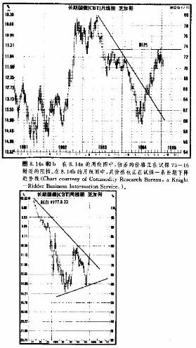

第八章 长期图表和商品指数
引言
在期货行业，当分析者从事市场预测和交易时，日线图显然是最受青睐的。但是通常，一张日线图只能覆盖合约有效期中的6到9个月。不过，由于大部分商品期货的交易商和分析师的兴趣主要局限于相对短期的市场行为，日线图当然被他们广泛地接受，成了期货分析者的首选工具。另外，日线图的维持相对来说简单易行，而且我们也可以从商业化的图表服务系统中随时获取，这也是其盛行的原因(随着计算机技术和信息传输系统的发展，日内图表也越来越流行时了，凭借日内图表，我们可以更细致地了解市场情况)。
然而，恰恰因为一般交易商过分依赖日线图，一门心思地关注短期市场行为，所以.不少人忽视了价格图表中另外非常有用的部分——连续周线图和连续月线图。利用这些长期图表.我们可以进行更长期趋势
的分析、预测。这些图表的用武之地并不仅限于个别市场。事实上，运用它们来研究一般商品指数和各种商品群体指数的主要趋势，也极为有益。
在合约的全部有效历史里，日线图只能覆盖相对短的范围。而如果要对市场趋势进行透彻的分析，就得把逐日的价格变化放到长期的趋势结构中去，考察其相互关系。为此，我们必须采用更长期的连续图表，我们知道，在日线图上，每根竖直线段代表当日一天的价格变化，那么在周线图和月线图上，每根竖直线段就分别代表对应一星期和一个月的价格变化。周线图和月线图的根本目的，就在于把价格变化所经历的时间大为压缩，从而在水平方向容纳更长的时间范围，提供更大时域的研究工具。
大范围透视的意义
通过长期图表，我们能够对市场趋势有很好的透视，而这个优势仅仅从日线图上是不可能取得的。在第一章我们介绍技术分析的理论基础时，曾强调指出，技术分析有个最大的长处，即我们可以把它应用于任何时间尺度之下，当然也包括长期性预测了。我们也提到过，有些人持有一种错误的看法，认为技术分析的天地只局限于短期选择时机，而长期性的预测则应该由基础分析去完成。
那么，朋友们请注意以下的图表，我相信，它们能够充分证明技术分析的各项原则—包括趋势分析、支撑和阻挡水平、趋势线和管道、百分比回撤、以及价格形态等，能够相当完美地适用于长期市场分析.在这里，顺便还要指出，不论是谁，如果他不考虑这些长期图表，就错过了大量价值不菲的价格信息。
连续图表的绘制
商品期货合约在到期前，一般大约有一年半的交易寿命。技术分析者为了回顾数年的历史资料，需要构造长期的连续图表，那么，期货合约的这种有限寿命的特征显然就构成障碍了。股市技术分析者没有这个麻烦。每种普通股以及各种股市平均价格指数的图表，从其上市之日起就是现成的。在商品期货行业，分析师面对着一个月份接一个月份不断推陈出新的一张张合约，怎样才能构造长期图表呢?
我们的办法是绘制连续图表。注意，“连续”二字是重点。最通行的一种技巧是，简单地把一串合约的价格图表接续起来就成了。这张合约到期后，就接上下一张合约。为了保证连续性，最简便也最常用的方法是，始终采用最近到期的合约的价格资料。当最近一张合约停止交易后，同一商品的一「一张合约就成为新的最近到期的合约，接下去我们画的就是它。
本章出现的连续图表都源于商品研究局。该机构每周出版一期《CRB期货图表服务》，提供所有期货市场的日线图。作为对日线图的补充，它也提供连续周线图。此外，它每季还推出一系列的连续月线图，
邮寄给客户。其周线图覆盖的时间为四年半，月线图一直可以上溯到22年以前。
构造连续图表的其余方法
把最近到期的合约图表连接起来的办法，既简单易行，又解决了期货合约图表的连续性问题。不过这个方法也有些小小的缺陷。有时候，接近到期合约的价格同下一张合约比起来有比较大的升水或贴水，那么，当我们从旧合约转接到新合约时，在图表上可能出现跳上或跳下的情形。另外，某些合约在接近到期日时，其价格具有极端的邃变性，这也是一种潜在的偏差。
技术分析者为了纠正这些偶尔发生的偏差，想尽了法子。有些人在当前合约到期前一二个月的时候，就换上下一张合约，以避开最后一个月的速变性。也有些人则避开最近到期合约，采用其次或复其次到期的合约。还有个办法是，选择具有最高持仓兴趣的合约画图，因为从理论上说这种到期月份的合约才真正代表了其市场价值。
我们也可以采用选定日历月份的办法来构造连续图表。比方说，所谓11月大豆连续图表，就是逐个地连接每年11月到期大豆合约的历史资料(这种连接特定月份合约的技术尤为W.n·江恩所钟爱).有些图表分析师甚至走得更远。他们把几种月份合约的价格加以平均，或者构造某种价格指数，以修正上述图表转换时升水或贴水的影响。
无期限合约TM
在《商品》杂志(现名为《期货》杂志)1983年3月号上，刊登了题为“无限期合约有益于技术分析”的文章。其中为解决价格的连续性间题，提出了一种新的方案。作者罗伯特·佩尔蒂埃是商品信息系统公司的总裁.文章中介绍了一个新概念，“无期限合约”和“CSI无期限合约TM是该公司的注册商标)。
他提出”无期限合约TM”的目的，在于按照一组连续的时间序列，来编排某种期货数年的价格历史。具体做法是，以连续推移的未来时间段为基础，建立一个时间序列。比如说，我们可以由这个时间序列来求得3个月或6个月后的某个数值。时间段可长可短，随用户选择。然后，把相应的时间段内前后相邻的两种合约的价格加权平均，就得到了“无期限合约”的价格。举个例子。假定我们计算的是三个月“无期限合约”现在是1月，那么三个月后就是4月。然后，我们选取4月前后的两个交易活跃的月份的合约价格，假定为3月和5月的，来加权平均(原文对如何计算加权平均值有更加周全的介绍)。如果今天是1月20日，那就取来一张价格图表，在三个月后的位置上(4月20日)标出一条竖直线段。下一步，在图上把这两张合约的当前价格分别点在它们的到期日(比方说分别是3月26日和5月28日)上。然后，把这两点连接起来，得到的直线同4月2D日那根竖直线相交，其交点的价格读数就是三个月无期限合约的价格。
无期限合约的数值并非真正的价格，而是上述两个价格的加权平均值。如果您有意进一步了解该加权平均值的构造方法及其优越性，请参阅前面引用的那篇文章，或者同该公司(C5I )联系。据佩尔蒂埃介绍，无期限合约的主要优势是，不需要完全依赖最近到期的合约，从而消除了连续图表在新旧合约切换时可能发生的偏差。
无期限指数TM
商品信息系统公司最近又推出了一个更新的概念，“无期限指数”。无期限合约是以期货合约价格为基础的，而无期限指数则把这些数值转换成指数。采用指数有个明显的长处，那就是我们能够比较容易地借助指数来比较不同市场的相对表现。C5I也在各种市场群类中引入了无期限指数，其方法大抵与CRB指数相伯仲。这种指数与CRB期货指数所涵盖的对象是一样的，只是基期选择得不同罢了。
到底这些复杂的花样是否比我们的最近到期合约方法更为有效，还有待进一步的考察。不过必须强调，即使这些办法中出现的偏差相对小些，连接最近到期合约这一简单方法依然是最通用的。操作也很便当。更重要的是，通过长期的实践证明，这种简单方法相当有效。
相反，如果我们要逐日绘制所有市场的无期限合约的图表，那实在是繁琐不堪。当然，用户也可利用计算机和电话数据转换器，每天从CSI获得这些加权平均值，但是其成本高昂。因此，朋友们有必要权衡权衡。或者保存历史资料，采用简便的传统方法;或者选择烦难的新技术，支付更高的代价。
图表分析技术可以应用于长期图表
绝大部分图表分析技术既可以应用于日线图，也同样适用于周线图和月线图。这一点值得反复重申。我们甚至可以更进一步地说，预测长期趋势常常比预测短期市场还要容易些。技术分析有两个基本的信
条:(1)市场以趋势方式演变;_(2)趋势具有惯性。在长期图表上，不但趋势具有明确的特征，而且其中长期趋势往往延续数年。而这两个方面正是长期图表最显著的特征。
想想看，我们只要在长期图表上做一次分析，就能管用几年呐!可是。目前在期货行业，绝大部分市场通讯专汪于短期性研究。往往在读者从邮局拿到之前，就已经时过境迁了。如此一来，在下一期发出之前，市场通讯的主办人都得借助电子信箱和电话热线频频刷新自己的分析，以保证自己的分析切合一日千里的现实。
长期趋势的持久性特点非常突出，从而引出了我们对另一个间题的有趣的思索—一市场的随机性。技术分析者并不接收市场行为“随机论”或“不可捉摸论”，但是为了稳妥起见，我们还是必须承认，从非常短暂的意义上说，市场上确实可能存在着这样那样的随机性价格变化。但是，我们从长期图表上明显可以看出，既存趋势具有长期的时间跨度，在许多情况下甚至持续数年之久。这个事实有力地驳斥了随机行走理论所谓价格在时间顺序上互不关联、过去对未来毫无影响的论调。
技术分析理论摘要
在考察以下的价格图表之前，我们先概述一下在图例中涉及的各种技术分析原则，以便朋友们体味。在技术分析的理论基础中，最重要的一条就是，分析者预测市场方向需要的所有信息都已经反映在价格图表之中。技术分析者坚信。所有最终可能影响价格变化的信息都包容、消化(或者反映)在价格里。价格上涨.则表明市场的心理是牛气的，而价格下跌，则反映市场心理是熊气的。
技术派认为，技术分析在某种意义上已经包含了基础分析，因为图表也反映了市场对基础性供求关系的估价，而正是这种估价才导致了牛市或熊市。因此，图表师有理由判断，如果价格上升，那么需求必定超过供给，基础因素就是看好的。从而，他就可以通过对市场行为的研究，来寻找价格最可能的走向的线索。他之所以这么做，就是要尽早发觉价格资料的重要趋势，越早越好。如前面所说，价格以趋势形式演变，并且其趋势具有强烈的持续下去的倾向。绝大多数技术性顺势系统的主要意图就在于，在趋势发生发展的初期，把它及时地判别出来;然后，这些系统就顺着趋势的方向开立头寸，一直维持到价格变化表
明该趋势已经终结或反转为止。
技术分析术语
在过去的10。多年中，技术派为了描述不同类型的市场行为，以及各种技术预测手段，建立了一整套技术分析术语。所谓趋势，就是价格变化的一般方向。上升趋势的规范定义是，一系列逐步递升的峰和谷。下降趋势则是一系列逐步递降的峰和谷。横向延伸趋势的峰和谷依次水平伸展。趋势通常又分为三级，主要趋势、次要趋势和短暂趋势。主要趋势常常持续数年。本章要讨论的就是这种主要趋势。
阻挡，是一个价格水平(或区域)，在其上方，卖方压力将增强。一般而言，前一个峰值就是一个阻挡水平。支撑，也是一个价格水平(或区域)，在其下方，买方的支撑较强。通常，前一个谷值就是一个支撑水平。历史支撑水平和历史阻挡水平的由来，可以上溯到数年之前。它们具有持久不衰的影响力，这是长期图表的最为令人注目的特征。一旦市场以足够大的幅度穿破了支撑水平，后者就转化成阻挡水平。在上升趋势中，阻挡水平被冲破后，就演变成新的支撑水平。图8.7是活牛期货的图表.是这一现象的典型例证，其中的历史阻挡水平35. 00和56i. 00后来均转化为支撑水平了。
趋势线在这些图表中的应用，也出奇地有效。在上升趋势中，基本的上升趋势线是通过向上反弹低点连接而成的。只要这条趋势线不被跌破，则上升趋势就有效。下降趋势线向右下方倾斜，是沿着上冲高点连接而成的，有时，市场会形成价格管道，在价格管道中，管道线平行于基本趋势线，位于价格的上方或下方。图 8. 1是商品研究局期货价格指数图，其中展示了一个为时10年的价格管道。
既成趋势常常按照一定的百分比例进行调整.最为知名的百分比回撤为50%回撤。例如，在上升趋势中，一个中等的调整或许要回撤到先前运动的50%的位置上，然后市场才恢复上涨。最小回撤约为先前运动的1/3，而最大回撤为其2/3。如果市场回撤到远超过2/3的程度，那么市场通常可能就要返回原先的起点了。因此，2/3回撤区是非常关键的。图8. 8和图8. l1a分别是糖和黄金的图表，例示了市场在2/3回撤点发生转折的情形。
图表上的形态
长期图表上也具备各种价格形态，其研读方法与日线图一象。在这些长期图表上，双重顶和双重底这两种形态非常醒目。当市场无力克服前一个峰值阻挡，而掉头向下，跌破了最近一个向上反弹低点之后，双重顶就形成了。双重底的情况正好相反。主要的双重顶出现在图8. 5和图8. 12a的玉米和铜的图表上。两个峰相距几乎有7年之久。图8.10显示的是一个头肩形底，例示的是小麦市场，时间从1964年到1972
年。三角形，通常属于持续性形态，但有时也以反转形态的面目出现，在这里的表现也很突出。请看，在图8. 2的CRB期货指数周线图上，就有个对称三角形。
还有一类形态也在这些图表中频繁露面，那就是周反转和月反转。举例来说，在月线图上，市场在当月向上达到了新的高点，但月末收市价格反而低于前一个月的月末收市价，那么这往往就是一个要紧的转折点，特别是当它发生在重要支撑或阻挡区附近时，尤其具有重要意义。周反转在周线图上也相当常见。这些形态同日线图上的关键反转日是对等的。不过，在长期图表上出现的反转形态的影响深远得多。
利用长期图表来从事趋势分析的最大优越性还在于图表自身。在后面的图例中，包括了几个覆盖时间长达20年的周线图和月线图的范例。我希望这些例子足以表明其价值，足以说明在进行趋势分析时它们是何等犀利有力。如果你从未识荆，恐怕要惊喜一番了。
从长期图表到短期图表
如果我们要进行透彻的趋势分析，那么，特别重要的是采取正确的读图顺序。图表分析的恰当次序应该是，从长期图表开始，逐步过渡到近期的图表。当朋友们与不同的时间范围打交道时，这样做的原因就一目了然了。如果分析者只能从短期图表开始研究，那么随着时间尺度的扩大，新的价格资料不断地参加进来，他就不得不相应地修正上一步的结论。即使朋友们已经完成了对日线图的深人分析。但当你再看到长期图表时，或许还得推倒重来。反过来，如果从大的背景入手，一下子考察了20年的全部价格资料，那么你就对市场首先有了恰当的纵览。分析者从长期透视中了解了当前市场的来龙之后，就可以逐步“聚焦”，找到市场当前的去脉。
在后面的图例中，第一张是为期20年的连续图表。分析者应当首先从这张图上找出较明显的图表形态，主要趋势线以及大致的主要支撑和阻挡水平等要素。然后再转向最近a年的周线图，重复上述程序。最后，再把注意力集中到日线图上，研究最近6个月到9个月的市场行为。这样就完成了从“宏观”到“微观”的过渡。交易商也不妨再向前走一步。研究研究日内价格图表，从而得到更细致入微的结果。
起点:商品价格指数
在股票行业，所有的市场分析方法都是从广泛的市场平均值，例如道琼斯指数、标准普尔氏500种股票指数等出发的，从中可以得出总体市场的一般方向.股票交易商或投资者首先必须弄清楚股票市场在总体上是牛市还是熊市，然后才谈得上选购具体的股票。股市分析者往往是在考察了广泛的市场平均值之后，再研究哪类行业的表现最出色。也就是力图在表现最佳的行业群类中，挑选出最佳企业的股票。全过程分三步进行。分析者起先要有非常广泛的印象，然后逐步逐步地缩小范围。期货交易商也应该采取相同的步骤。
商品研究局期货价格指数
在我们分析任何商品市场的时候，第一步理所当然是要弄清总体商品价格的方向。我们可以通过分析商品研究局期货价格指数来解决这个问题。它是最受关注的商品价格的晴雨表。该指数含有27种商品期货，反映了商品市场的总体趋势。因此，它是我们的必不可少的起点，由之可以确定商品市场总体上是上涨还是下跌，具体市场所处的大环境是牛气的还是熊气的。
CRB群类指数
第二步，分析者应该考察各种市场群类，挑选出最坚挺的或最疲弱的商品群。举例来说，如果CRB期货指数为上升趋势，或者正处于向上反转的过程中，那么分析者就可以采用相对强度的概念，从这一类指数中选出技术特色_卜最坚挺的商品群类。下面，就该把注意力放到这些强者中去了。
个别市场
第三步，我们要集中注意力，从表现最坚挺的群类中甄选出表现最强的个别市场(我们这里是以看涨的大气候为例，分析者从多头的角度考虑问题)。在价格膨胀的阶段,CR$期货指数趋涨(比如在70年代)，那么分析者就应该集中精力，对付涨势最强的市场群类，从其中挑出最坚挺的具体期货市场，以寻求买进的良机。而在价格萎缩的阶段(比如从1980年以来)，CRB指数趋跌，交易者就应该着眼于最疲弱的市场群类，从中抓住最软弱的具体期货。以寻求卖出良机。
所以，在分析者打开某个市场的图表之前，他就应该对总的商品市场的价格水平到底是看涨还是看跌、以及该市场所处的期货群类的价格水平到底是看涨还是看跌等背景，做到心中有数了。
综上所述，当我们对某市场进行透彻的趋势分析的时候。应该遵循下列正确的步骤:首先分析CRB期货价格指数的20年的月线图，然后是其5年的周线图，最后是其日线图;接下来，考虑各种CRB群类指数(或者分析者感兴趣的某群体)的长期周线图和日线图;最后一步，研究个别市场，由月线图而周线图，最后至日线图。本章后面的图例的编排，正是出自上面的考虑。第一例，图8. 1，就是CRB期货价格指数的20年连续月线图。
是否应对长期图表进行通货膨胀的修正?
在结束我们的说明之前，还需要作几点补充。第一个间题是，是否应该对长期图表上的历史价格进行通货膨眼修正。不管怎么说，从70年代早期之后，通货膨胀率是惊人的. 到了80年代，通货紧缩也是不同寻常的，那么，美元的价值前后就有了较大的变化。如果我们不对长期图表的历史价格进行修正，它们上面的峰和谷还有意义吗?分析师们对这个问题颇有争议。
我个人认为，不必要对长期图表进行任何修正，理由很多。主要的，我相信市场自身已经进行了必要的修正。当贷币贬值时，就会导致用该货币表示的商品价格的上涨。因此，随着美元的贬值，商品价格就会相应上升。毫无疑间，商品期货的长期图表上7O年代的价格上涨，在很大程度上仅仅反映了美元的疲弱。对应地，最近5年商品价格的下跌，在很大程度上则直接归因于美元的坚挺。
第二个值得推敲的问题是，从70年代商品价格的巨额抬升，到80年代商品价格的大幅下跌，都是通货膨胀作用的经典实例。因此，尽管在70年代商品价格翻了两番乃至三番，要对它们进行通货膨胀修正还
是没有根据的。商品价格的上涨正是通货膨胀的结果。在80年代，经济学家曾经把商品价格的下跌作为通货膨胀受到控制的标志。金价现在已经跌到1980年的一半以下了，难道我们有必要用较低的通货膨胀率对它修正一番吗?我想市场本身对这方面的问题早已“置之度内”了。
最后一个间题，牵涉到技术分析理论的核心，“市场行为最终包容、消化一切因素”这条基本前提。市场自我调节、自动适应了通货膨胀、通货紧缩以及货币币值变化的要求。到底是否要用通货膨胀修正长期图表?这个问题的真正解答还在于长期图表本身，“解铃还待系铃人”。图8. l2a是铜的图表，其中1980年的牛市的最高点恰好达到了1974年牛市的最高点，然后市场便开始下跌，一直跌到、并稳定于1975-1977年的熊市低点上。许多市场都无力冲破数年以前形成的历史阻挡水平，而且从此开始下滑，一直跌到数年前形成的历史支撑水平。如果长期图表需要进行通货膨胀修正的话，这类价格变化将无从发生。
长期图表不直接服务于交易
长期图表不宜直接应用于交易中。我们必须把对市场的分析预测和出入市时机抉择这两项工作区别开来，长期图表在确认主要趋势和价格目标时大有裨益。不过，它们不适用于出入市时机的选择，不应该服务于这种目的。后面这方面的研究更为灵敏，因而必须采用日线图以及日内线图来进行。
结语
在以下图例中出现的各种技术工具都是较为基础的，传统的图表分析者当能一目了然。其中我们只采用了从第一章到第七章的一些原理。不过，其它图表分析技术也毫不例外地适用于周线图和月线图。比如，长期图表也可以用来研究长期性周期。艾略特波浪理论在长期图表上也一样有用武之地。在玉米和棉花的月线图图例中，就有5浪牛市的例子。
在这些图表上，长期性移动平均线的应用还是个薄弱环节。作者几年前曾经做过一点尝试，实践表明，在周线图上大可采用10周和30周移动平均线来追踪长期趋势。这些平均线同股市分析中所采用的平均线大同小异，但是它们在期货市场上一直没受到重视。
对长期图表，我们只需要每隔一段时间深入地研究一下就行了。在短时间内，长期图表上的价格形态变化甚少。因此，平时我们只需要对之略加观察，就足以获得有关的背景知识了。
日线图依然是期货商的基本工具。对短线的操作者来说，日内图表也是大为得力的工具。本章的意图并不是要改变上述事实。无论如何，我们希望朋友们牢记的是，长期图表是对短期图表的重要补充，如果没有前者，我们将错过大量极有价值的价格信息。朋友们应当清楚，如果在我们的分析过程中把广泛性商品价格指数的研究也包括进来，那是很有益处的。
目前人们已经日益了解了这些长期图表和指数的价值。当我们把它们与日线图共同使用的时候，我们的图表分析就具备了一个全新的视野，为技术分析在期货市场的应用增色不少。
周线图和月线图的实例
在本章以下的几页中，有几张是长期周线图和月线图。这些图表在很大程度上可谓“其义自现”，无需另做解说。不过在图8. 5和8.6中，我们用到了一点艾略特波浪的5浪牛市的内容，但极为基本。图中所标注的，仅限于长期的支撑和阻挡水平、长期趋势线、百分比回撤、周反转、以及间或出现的价格形态等。
随便翻翻这些图表吧，请注意，其中大量的历史资料在日线图上完全是看不到的。日线图与5年的周线图相比，缺失了80%的价格资料，同20年的月线图相比，丧失了95%的历史内容。好在现在朋友们就可以一睹这些历史资料的风采了，不妨体味体味结合使用它们从事分析的妙处。

技术指标
下一章，我们将探讨最流行的一种技术指标——移动平均线。这也是绝大部分趋势顺应系统的机关之所在。